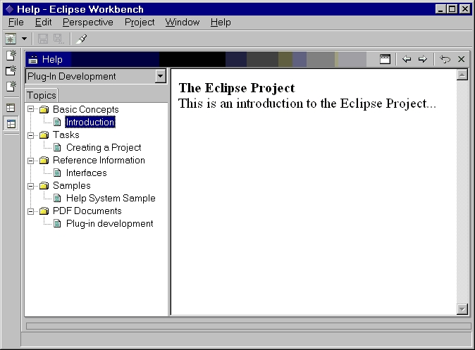

| Note: The help system is still under development and can be expected to change somewhat before reaching stability. It is being made available at this stage to solicit feedback from early adopters, on the understanding that the details of the contribution mechanisms might change in breaking ways. |
Description: For registering an online help contribution for an individual plug-in.
Each plug-in that contributes help files should in general do the following:
<!ELEMENT topics EMPTY>
<!ATTLIST topics name CDATA #REQUIRED>
<!ELEMENT topics (topic)* ) >
<!ATTLIST topics id ID #REQUIRED >
<!ELEMENT topic (topic)* >
<!ATTLIST topic id ID #IMPLIED >
<!ATTLIST topic label CDATA #REQUIRED >
<!ATTLIST topic href CDATA #IMPLIED
>
Configuration Markup for Infosets (this is what goes into the infoset manifest file):
<!ELEMENT infoset (infoview)* >
<!ATTLIST infoset id ID
#REQUIRED >
<!ATTLIST infoset label CDATA
#REQUIRED >
<!ATTLIST infoset href CDATA
#IMPLIED >
<!ATTLIST infoset standalone
(false|true) false #IMPLIED >
<!ELEMENT infoview EMPTY>
<!ATTLIST infoview id ID #REQUIRED >
<!ATTLIST infoview label CDATA #IMPLIED >
Configuration Markup for Insert Actions (this is what goes into the actions manifest file):
<!ELEMENT actions (insert)* >
<!ATTLIST actions infoview CDATA #REQUIRED
>
<!ATTLIST actions standalone (true | false)
false #IMPLIED >
<!ELEMENT insert (insert) >
<!ATTLIST insert from CDATA #REQUIRED >
<!ATTLIST insert to CDATA #REQUIRED >
<!ATTLIST insert as (child
| first-child | last-child | prev-sib | next-sib) "child" >
<!ATTLIST insert label CDATA #IMPLIED >
In general, a plug-in that needs to provide online help will define its own topics manifests and the necessary actions manifests to wire the topics to the correct place. In the end, the help system is configured to be launched as some actions, and the id of the information set can be used to do so.
There are four types of XML elements a plug-in can use: the topic, the infoset, the actions, and the insert elements.
The topic element
With respect to topics elements, all the topics are contributed as part of the topics container element. They can have a hierarchical structure, or can be listed as a flat list. A topics manifest is viewed as a data source for further topics interleaving and organization into an integrated web, with different view perspectives. In addition, topics can be acted upon by specifying their id's, but one can also act on a group of topics by specifying the id of the containing topics or topic element. Later when wiring topics to views or other topics, the structure defined in the topics manifest is maintained (subject to alterations done by insert actions).
The topic element is the workhorse of the navigation structure. There are three typical uses for the topic element:
1. To provide a link to a documentation file - usually an HTML
file.
2. To act as a container for other topics, either in the same
manifest or another.
3. To provide an insertion point for other topics, either in
the same manifest or another.
1. Topics as links
The simplest use of a topic is as a link to a documentation file.
<topic label="Some concept file" href="concepts/some_file.html" />
The href attribute is relative to the plug-in that the manifest file belongs to. If you need to access a file in another plug-in, you can use the syntax
<topic label="topic in another plug-in" href="/other.plugin.id/concepts/some_other_file.html" />
2. Topics as containers
The next most common use of a topic is to use it as a container for
other topics. The container topic itself can always refer to a particular
file as well.
<topic label="Integrated Development Environment" href="concepts/ciover.htm"
>
<topic label="Starting the IDE" href="concepts/blah.htm"
/>
...
</topic>
3. Topics as insertion points
Topics can be used as insertion points. They provide a logical
place for other topics to try and merge around. To act as an insertion
point, the topic must have an id attribute.
The infoset element
An information set is an entry point into a documentation web. It can be thought of as a collection of views.
Views are intended to provide high level semantic groupings within a documentation web. They are defined using the infoview element defined within an infoset. A documentation team could use a view to produce getting started, tasks, and references sections (or other views the product team defines). The platform does not specify the actual sections, only the mechanism for defining them.
For example, there can be a "task view" defined which is a merge of all the topics from a "how to do something" perspective. Another view, a "component view", can also be defined which is a topics tree displaying all components and their documentation.
The infoview element represents a container for topics that can be "shared" across plug-ins. It is a perspective on the entire documentation. There may be times when a number of different plug-ins contribute to the same logical documentation component. This element ensures that during a "component view," they are correctly merged together into a coherent view.
The actions element
The actions manifest contains scripting actions to be performed on topics and views. Currently there is only one kind of action, the insert action, which is used to write topics and views together into one integrated information web, with multiple views.
The actions are structural actions (insert) and, thus, apply to a certain infoview. So, all the insert actions in a manifest build the topic hierarchy in one infoview.
The insert element
One of the most complicated parts of a componentized navigation is how to create an integrated information structure with a continuous flow of navigation. To do this, we need a mechanism to publish insertion points, choose which insertion point we want to use, and to indicate where we want to insert topics (parent, child, before, after).
The insertion points can be topics or views. A topic indicates its willingness to be an insertion point by providing an id. Views are required to have id's. Only fully qualified ids are use as references. For example, the fully qualified topic id of the topic <topic id="concepts" label="concepts"> in the org.eclipse.help.examples.ex1 plug-in is org.eclipse.help.examples.ex1.concepts.
Since the insertion points are typically located in other plug-ins, and these plug-in may not be installed, one can specify an alternate insertion point. By default, if none of the choices succeed, the topic stays under its component hierarchy. The "to" attribute specifies the target insertion point. The topic specified by the "from" attribute is the topic being inserted. Followings are some possible ways to insert a topic and they are specified using the as attribute:
Alternative insertion options are provided, and would be executed when
previous ones could not be performed. The nested insert subelements of
the insert element provide these alternatives. This can be thought of as
a "fall-back" mechanism where if an insert action fails, the nested insert
action will be executed. Once the first choice insertion point has been
satisfied, the other alternative insertion points are ignored.
Examples:
The following is an example of using the contributions extension point. Assume the following is for a plug-in with id named "org.eclipse.help.examples.ex1". (The example is intended as a general sample, and it should be noted that the same documentation hierarchy, resulting from all the following contribution files, could also be created with various combination of topics and actions files.)
(in file plugin.xml)
<!-- Use the Help System contribution extension
point to define Infosets, topics, -->
<!-- and actions contribution files. For clarity,
the extension point is used -->
<!-- twice, once to define the Infoset and it's
view, and another to define the -->
<!-- Topics and their associated actions.
-->
<extension point="org.eclipse.help.contributions">
<infoset name="infoset.xml"/>
</extension>
<extension point="org.eclipse.help.contributions">
<topics name="infosetTopics.xml"/>
<actions name="infosetActions.xml"/>
</extension>
<!-- Configure the help contribution for this plugin
-->
<!-- This part should be in a documentation plugin
-->
<extension point="org.eclipse.help.contributions">
<topics name="topics.xml"/>
<actions name="topicsActions.xml"
/>
</extension>
(in file infoset.xml)
<!-- Define the Infoset, and any views it has. -->
<infoset id="ex1InfosetId" label="%help_system_example">
<infoview id="topicsView" label="%topics"/>
</infoset>
(in file infosetTopics.xml)
<!-- Now define a "container" topic that holds your general topics. This makes it -->
<!-- easier to quickly insert all these general topics under the view in the -->
<!-- Infoset. -->
<topics id="topLevelTopics">
<topic id="concepts" label="%concepts"/>
<topic id="tasks" label="%tasks"/>
<topic id="references" label="%references"/>
<topic id="samples" label="%samples"/>
</topics>
Define topics contained in the above general topics:
(in file topics.xml)
<topics id="topics">
<topic id="aConceptId" label="%introduction" href="concepts/concept.html"/>
<topic id="aTaskId" label="%creating_a_project" href="tasks/task1.html">
<topic id="aSubTaskId1" label="%creating_a_web_project" href="tasks/task2.html"/>
<topic id="aSubTaskId2" label="%creating_a_java_project" href="tasks/task3.html"/>
</topic>
<topic id="aReferenceId" label="%interfaces" href="ref/ref1.html"/>
<topic id="aSampleId" label="%help_system_sample" href="MissingFile.html"/>
</topics>
Now define the insert actions necessary to create the documentation
hierarchy :
(in file infosetActions.xml)
<actions infoview="org.eclipse.help.examples.ex1.topicsView">(in file topicsActions.xml)
<insert from="org.eclipse.help.examples.ex1.topLevelTopics"
to="org.eclipse.help.examples.ex1.topicsView" as="child"/>
</actions>
<actions infoview="org.eclipse.help.examples.ex1.topicsView">Here is the resulting documentation hierarchy in the Eclipse Workbench :
<insert from="org.eclipse.help.examples.ex1.aConceptId"
to="org.eclipse.help.examples.ex1.concepts" as="child"/><insert from="org.eclipse.help.examples.ex1.aTaskId"
to="org.eclipse.help.examples.ex1.tasks" as="child"/><insert from="org.eclipse.help.examples.ex1.aReferenceId"
to="org.eclipse.help.examples.ex1.references" as="child"/><insert from="org.eclipse.help.examples.ex1.aSampleId"
to="org.eclipse.help.examples.ex1.samples" as="child"/>
</actions>

API Information: No code
is required to use this extension point. All that is needed is to supply
the appropriate manifest files mentioned in the plugin.xml file.
Supplied Implementation: The optional default implementation of the help system UI supplied with the Eclipse platform fully supports the contributions extension point.